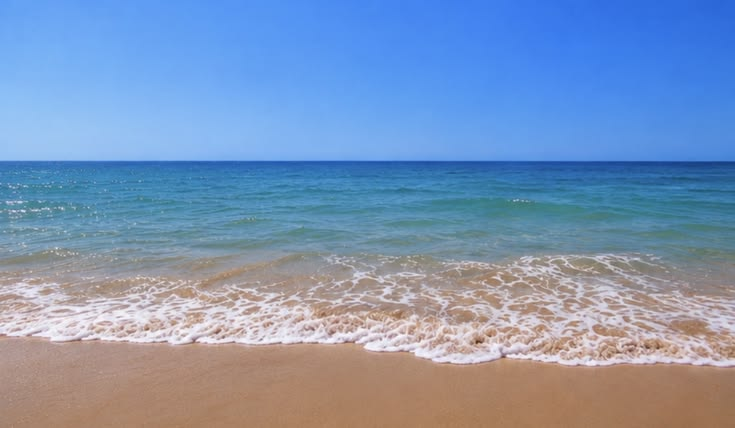

Cuando leí el manifiesto de Chia Amisola me llamó la atención que no habla de los sitios web como algo técnico, sino casi como algo vivo. Para ella un sitio web es un mundo, un cuarto, un mar, un recuerdo y hasta una forma de querer a alguien.
Como estudio literatura, lo leí casi como un poema: frases cortas que empiezan igual y muchas preguntas que no responde. Me gustó porque me hizo pensar que hacer una página también es escribir, solo que con otras herramientas.
"Un sitio web es un mundo." Chia Amisola
Amisola dice que los sitios se pueden remezclar y construir sobre otros. Este nace de un ejercicio de clase, pero quise llevarlo a mi propia agua: la que se abre en océano y la que se estrecha en cauce.